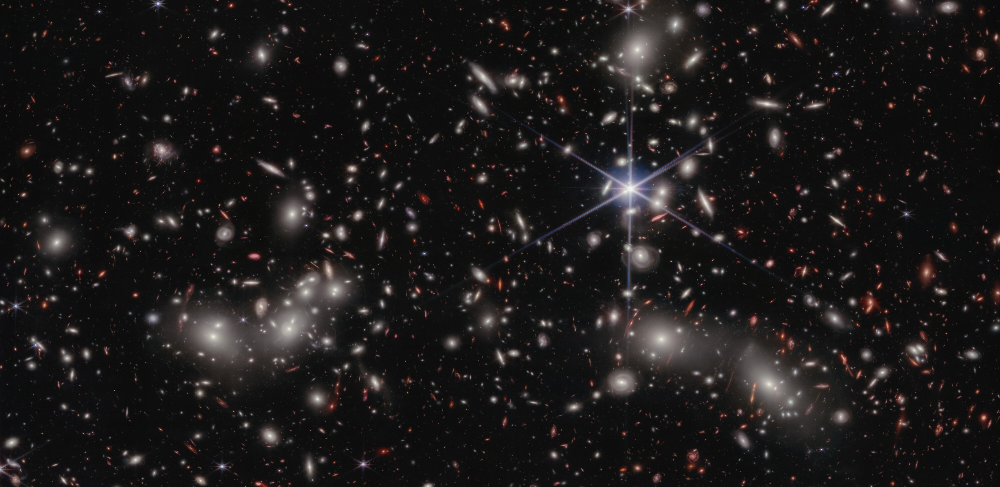

Education
ABITUR - Königin-Charlotte-Gymnasium, Stuttgart, Germany
September 2009 - July 2017< br/> - bilingual class (English)< br/> - DPG Abitur prize in physics< br/> - suggested for scholarship "Studienstiftung des deutschen Volkes"
YEAR ABROAD - Canterbury High School, Fort Wayne IN, USA
August 2014 - May 2015
- scholarship through assist
- "Headmaster's List" for extraordinary academic achievements during the school year
BACHELOR OF SCIENCE - Universität Leipzig, Leipzig, Germany
October 2017 - January 2023
- International Physics Studies Program
- instructed completely in English
- THESIS: "A selective view on radio emission as observed by LOFAR" in collaboration with the Thüringer Landessternwarte Tautenburg
MASTER OF SCIENCE - Stockholm University, Stockholm, Sweden
September 2021 - September 2023
- Master in Astronomy
- THESIS: "Resolving the smallest scale of star formation at Cosmic Noon with JWST: Star-forming clumps in a galaxy lensed by Abell 2744"
PHD - Swinburne University of Technology, Melbourne, Australia
January 2024 - today
- working on the gas chemistry of Lyman Alpha Emitters